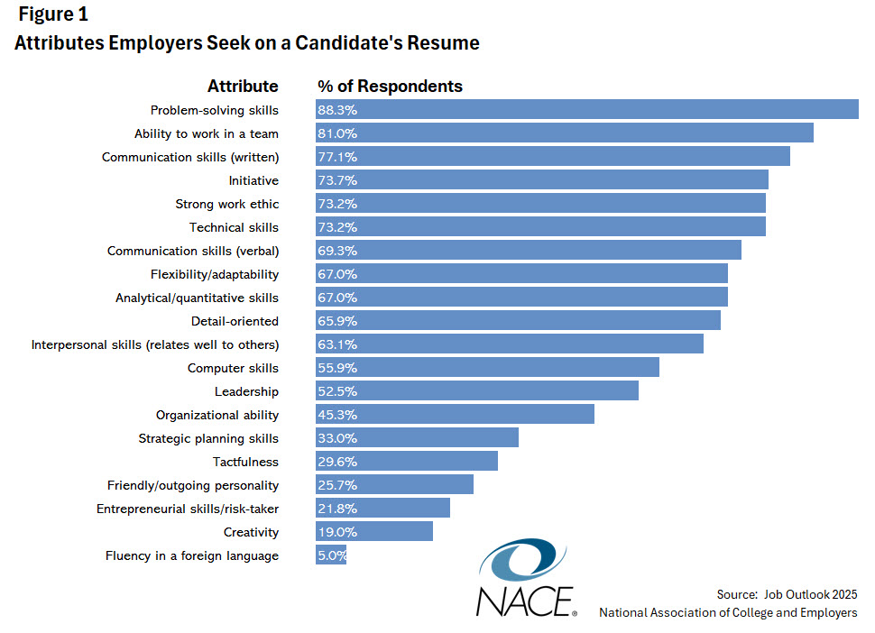

Google AI answers 11/2025
Problem-solving is crucial in the workplace because It fosters adaptability, boosts team performance through collaboration and conflict resolution, and is essential for career growth.
But which attributes and skills are most important to employers?
Specifically, when asked what attributes they are looking for on resumes, nearly 90% of employers responding to NACE’s Job Outlook 2025 survey indicated they are seeking evidence of a student’s ability to solve problems and nearly 80% are seeking candidates who have strong teamwork skills. (See Figure 1.)
Written communication skills, initiative, strong work ethic, and technical skills are important to at least 70% of responding employers.
In addition, more than two-thirds seek verbal communication skills, flexibility/adaptability and analytical/quantitative skills in the candidates they recruit.

https://reboot-foundation.org/the-state-of-critical-thinking-2020/
Introduction In 2018, the Reboot Foundation released a first-of-its-kind survey looking at the public’s attitudes toward critical thinking and critical thinking education. The report found that critical thinking skills are highly valued, but not taught or practiced as much as might be hoped for in schools or in public life.
The survey suggested that, despite recognizing the importance of critical thinking, when it came to critical thinking practices—like seeking out multiple sources of information and engaging others with opposing views—many people’s habits were lacking. Significant numbers of respondents reported relying on inadequate sources of information, making decisions without doing enough research, and avoiding those with conflicting viewpoints.